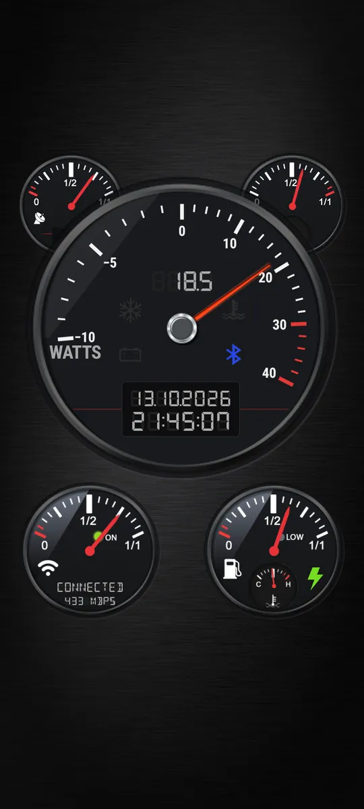
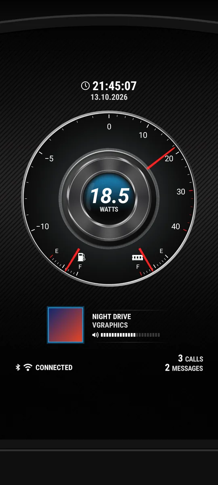
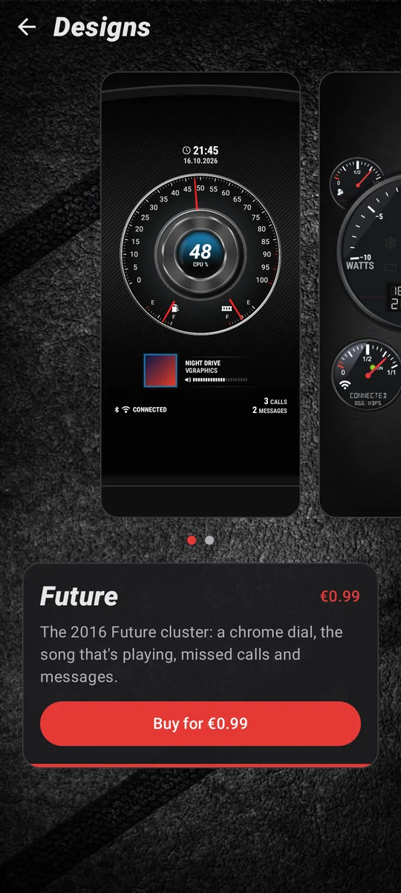
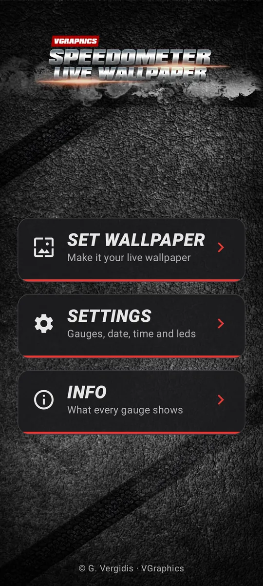

Mode 1
Mode 1
Power
Watts going into the battery (to the right) or out of it (to the left, with a minus).
Your phone, as a car dashboard.
A live wallpaper with real gauges. The big dial shows power, CPU clock or your GPS speed. Around it: battery, memory, signal and Wi-Fi, with warning lights and a digital clock.

Pick the mode in Settings, tap the gauge on your home screen, or use the Big gauge tile in Quick Settings, which switches it on every phone, Samsung's included. The digits above the needle show the same value.
Mode 1
Watts going into the battery (to the right) or out of it (to the left, with a minus).
 Mode 2
Mode 2
How fast the processor runs, as a share of its top speed. On phones that allow reading it.
 Mode 3
Mode 3
Your speed in km/h or mph. A red mark shows the top speed of the current drive.
Open Designs in the app and swipe through them. Each preview is drawn by the wallpaper itself, at your phone's shape.
The 2016 dashboard: the big gauge with signal and RAM behind its shoulders, Wi-Fi and battery below, four warning lights and an LCD clock.

The 2016 chrome cluster, rebuilt: one big dial with the same three modes, battery and RAM arcs, the clock and date, and the Bluetooth and Wi-Fi status.
Tap a red dot on the dashboard, or open a part below.
The small gauge at the top left shows your mobile signal, from 0 to 4 bars.
More in the wiki →The small gauge at the top right shows how much of the phone's memory is in use.
More in the wiki →It shows one of three things: power, CPU clock or GPS speed (see the modes above). Tap it on your home screen, or use the Big gauge tile in Quick Settings, to switch. The digits above the needle show the same value.
More in the wiki →Four lights on the big gauge. Each one can be switched off in Settings.
The LCD under the big gauge. The time format, date order, separators and seconds are all in Settings.
More in the wiki →The strength of your Wi-Fi signal. Under it, a status line reads CONNECTED (with the link speed in Mbps), NO NETWORK, MOBILE DATA or DISABLED. The ON light is green on Wi-Fi and yellow on mobile data.
More in the wiki →How full your battery is. The LOW light comes on at the low battery level, and the green bolt lights while the phone charges. The small dial shows the battery's temperature, from low (C) to high (H).
More in the wiki →These are real renders. The dashboard fits phones and tablets of any shape.




Nothing the gauges read is sent anywhere. Your location is used only for the speed in GPS mode, and only while the wallpaper is on screen. Future's music, calls and messages are read on the phone and stay there.